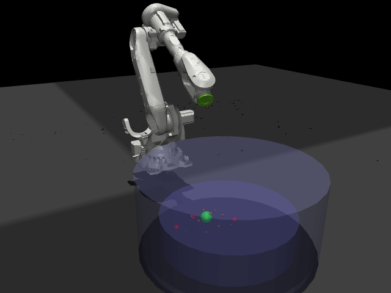
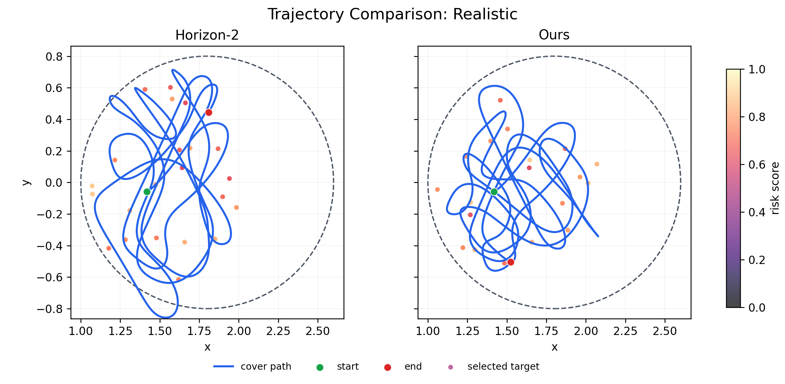

覆盖率
0.0%
0 / 0 已服务（单次）
ABB / MuJoCo Digital Twin
实时作业
数据来源：V12 checkpoint 的 MuJoCo 单次 held-out rollout。这里展示真实轨迹，但单次轨迹不代表论文多 seed 均值。
场景
平均响应
0.00 s
生成至覆盖
P90 延迟
0.00 s
SLA 4.0 s
活动积压
0
最大 6 个
作业阶段
待机
会话 00:00
真实末端覆盖轨迹
轨迹加载中
MuJoCo 记录数据
V12 seed0 · eval seed100
服务队列
按真实活动点年龄排序
暂无活动目标
最老点0.0 s
累计 SLA 达标0%
会话趋势
覆盖率与活动积压
覆盖率积压
真实事件流
由 rollout 状态变化生成
残差与服务
当前会话参数
观测与保护
运行时开关
工作点
已应用
- 基础规划器
- Horizon-2
- 学习策略
- LSTM-PPO residual
- 目标排序
- arrival age + route risk
- 输出动作
- [Δx, Δy, s]
- 训练目标
- coverage + service
在线决策链路
实线为执行路径，虚线为训练反馈
Observationrobot · spots · history
Horizon-2base action
LSTM-PPOresidual action
Phase fusionu = ubase + βkures
Action shieldclip · guard · progress
Robot actionΔx · Δy · speed
覆盖率主结果
Ours vs Horizon-2
证据边界
Extreme coverage
+3.8个百分点
- Bootstrap 95% CI
- [+1.2, +6.8] pts
- 未校正 p
- 0.0457
- Holm 校正
- 不显著
- 服务代价
- P90 +6.09 s
四阶段结果
mean ± std
| Stage | Ours Cov. | H2 Cov. | Δ | Ours Lat. | H2 Lat. | Ours P90 | H2 P90 |
|---|---|---|---|---|---|---|---|
| Low | 0.917 ± 0.010 | 0.919 ± 0.004 | −0.002 | 12.54 s | 12.16 s | 24.15 s | 23.72 s |
| Realistic | 0.901 ± 0.016 | 0.896 ± 0.009 | +0.005 | 16.04 s | 16.52 s | 29.70 s | 29.45 s |
| Hard | 0.870 ± 0.024 | 0.870 ± 0.019 | −0.000 | 19.59 s | 19.23 s | 38.10 s | 35.44 s |
| Extreme | 0.855 ± 0.024 | 0.816 ± 0.026 | +0.038 | 23.88 s | 21.38 s | 46.01 s | 39.92 s |
论文消融对比
coverage mean ± std；回放按钮打开 seed0 / eval seed100 的 Extreme 轨迹
| Variant | Low | Realistic | Hard | Extreme | 轨迹验证 |
|---|---|---|---|---|---|
| Main residual PPO | 0.917 ± 0.010 | 0.901 ± 0.016 | 0.870 ± 0.024 | 0.855 ± 0.024 | |
| No attention | 0.921 ± 0.017 | 0.906 ± 0.009 | 0.884 ± 0.017 | 0.839 ± 0.017 | |
| No carry | 0.915 ± 0.011 | 0.903 ± 0.013 | 0.873 ± 0.015 | 0.848 ± 0.019 | |
| No prediction | 0.922 ± 0.015 | 0.909 ± 0.015 | 0.873 ± 0.016 | 0.849 ± 0.018 | |
| No service reward | 0.926 ± 0.013 | 0.904 ± 0.015 | 0.862 ± 0.022 | 0.849 ± 0.025 | |
| No residual | 0.838 ± 0.094 | 0.776 ± 0.091 | 0.726 ± 0.117 | 0.687 ± 0.092 |


模块健康度
最后检测 --:--:--
- MuJoCo rollouttrajectory.csv · eval seed100已载入
- Horizon-2 规划器base action available正常
- LSTM-PPO checkpointV12 seed0 · deterministic已载入
- 动作保护clip · guard · progress启用
- 指标记录CSV / JSON session log正常
- ROS 实时接口hardware bridge reserved待接入
计算时序
当前基准
策略动作均值6.8 ms
策略动作 P908.5 ms
环境步进均值3.6 ms
决策预算50.0 ms
计算链路满足高层决策周期
接口映射
后端集成边界
- 回放
- trajectory.csv / summary.json
- 训练代码
- ShangZengEnv + PPOPolicy
- 规划器
- select_action(state)
- 指标
- finalize() / export()
- 实机
- ROS bridge / MoveIt!
风险与告警
当前会话
Extreme 服务尾部当前论文结果 P90 46.01 s，高于 15 s 服务目标。
实机接口未启用当前界面运行浏览器仿真，未发送机械臂动作。